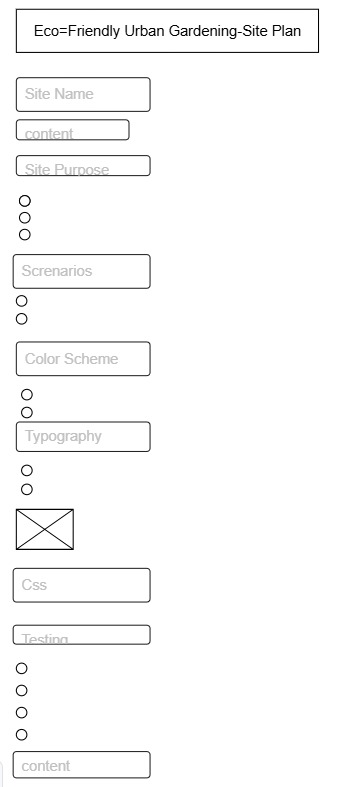
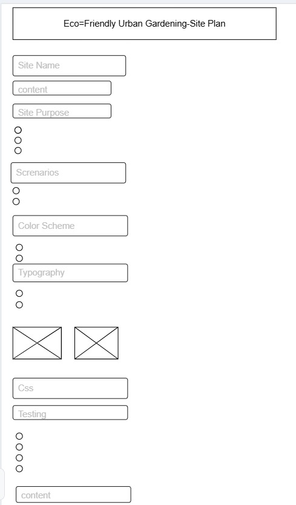

Site Name
Eco-Friendly Urban Gardening
This name was selected because it clearly reflects the focus on sustainable and environmentally conscious gardening practices in urban areas.
Site Purpose
This website will promote sustainable urban gardening practices for city residents. It will provide:
- A homepage introducing the benefits of urban gardening and why eco-friendly practices matter.
- A resources page with tips on container gardening, composting, and water-saving techniques.
- A dynamic blog page that loads the latest gardening news and articles with filtering options.
The site will use semantic HTML, CSS for responsive design, and JavaScript for dynamic content and interactivity.
Scenarios
- How can I start an urban garden with limited space?
- What eco-friendly techniques can help save water while gardening in the city?
Color Schema
The chosen color scheme is designed to reflect nature and sustainability:
- Forest Green (#2c6f4e): Used for headings, accents, and links.
- Light Teal (#e0f2f1): Used for backgrounds of sections and accents.
- Soft Sky Blue (#f0f8ff): Used as the page background color.
Typography
The following fonts are selected:
- Segoe UI, Tahoma, Geneva, Verdana, sans-serif: For all headings.
- Arial, sans-serif: For paragraph body text.
Wireframe
Below are wireframe sketches representing the home page layout for mobile and desktop views:
 CSS
A supporting CSS file (siteplan.css) will apply the chosen colors and typography
consistently across this site plan document.
Testing
The site plan will be tested for:
- Validation using W3C HTML and CSS validators.
- Accessibility checks to ensure semantic structure and readability.
- Performance and SEO best practices.
- Color contrast to meet accessibility standards.